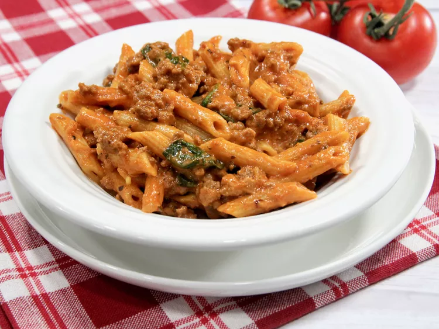

Instant Pot® Ground Beef and Pasta
Home

Description
Ground beef and pasta in a creamy sauce, with spinach, made in an Instant Pot®.
Ingredents
- 1 ½ pounds ground beef
- 2 teaspoons Italian seasoning
- 1 teaspoon kosher salt
- ½ onion, chopped
- 2 cloves garlic, minced
- 1 (16 ounce) package cavatelli pasta
- 1 (15 ounce) can tomato sauce
- 1 (8 ounce) can tomato sauce
- 2 cups beef broth
- 6 ounces grated sharp Cheddar cheese
- 2 cups baby spinach
- ½ cup heavy cream
Directions
- Turn on a multi-functional pressure cooker (such as Instant Pot®) and select Saute function. Brown beef in the hot pot with Italian seasoning and salt, 5 to 7 minutes. Add onion and saute until softened, about 5 minutes. Add garlic and saute for 1 minute. Stir in pasta, both cans of tomato sauce, and beef broth. Close and lock the lid.
- Select high pressure according to manufacturer's instructions; set timer for 6 minutes. Allow 10 to 15 minutes for pressure to build.
- Let sit with the lid closed for 5 minutes. Release pressure carefully using the quick-release method according to manufacturer's instructions, about 5 minutes. Unlock and remove the lid.
- Stir in Cheddar cheese until melted. Stir in baby spinach until wilted. Stir in heavy cream. Serve immediately